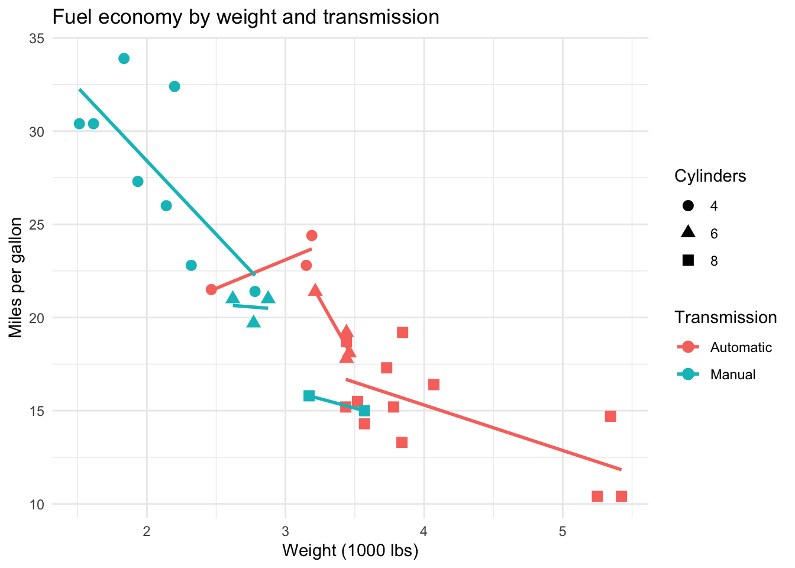

library(ggplot2)Fuel Economy and Car Design in R
Question
This post uses R to examine how vehicle weight and transmission type relate to fuel economy in the mtcars dataset.
Data: mtcars, bundled with R’s datasets package. The data were extracted from the 1974 Motor Trend US magazine and are distributed as part of R.
Load and Prepare the Data
The dataset has one row per car model and includes fuel economy, engine, weight, and transmission variables. I turned row names into a regular column and converted the transmission code into readable labels.
cars <- mtcars
cars$model <- rownames(mtcars)
cars$transmission <- factor(cars$am, levels = c(0, 1), labels = c("Automatic", "Manual"))
cars$cylinders <- factor(cars$cyl)
head(cars[, c("model", "mpg", "wt", "hp", "cylinders", "transmission")]) model mpg wt hp cylinders transmission
Mazda RX4 Mazda RX4 21.0 2.620 110 6 Manual
Mazda RX4 Wag Mazda RX4 Wag 21.0 2.875 110 6 Manual
Datsun 710 Datsun 710 22.8 2.320 93 4 Manual
Hornet 4 Drive Hornet 4 Drive 21.4 3.215 110 6 Automatic
Hornet Sportabout Hornet Sportabout 18.7 3.440 175 8 Automatic
Valiant Valiant 18.1 3.460 105 6 AutomaticThe dataset is small, so a grouped summary is useful before fitting a model.
aggregate(
mpg ~ transmission,
data = cars,
FUN = function(x) round(c(mean = mean(x), median = median(x), min = min(x), max = max(x)), 2)
) transmission mpg.mean mpg.median mpg.min mpg.max
1 Automatic 17.15 17.30 10.40 24.40
2 Manual 24.39 22.80 15.00 33.90Visualize Fuel Economy
Heavier cars tend to have lower miles per gallon. Manual cars in this dataset often appear among the lighter, more fuel-efficient cars.
ggplot(cars, aes(x = wt, y = mpg, color = transmission, shape = cylinders)) +
geom_point(size = 3) +
geom_smooth(method = "lm", se = FALSE) +
labs(
x = "Weight (1000 lbs)",
y = "Miles per gallon",
color = "Transmission",
shape = "Cylinders",
title = "Fuel economy by weight and transmission"
) +
theme_minimal()`geom_smooth()` using formula = 'y ~ x'
Fit a Linear Model
I fit a simple linear model to estimate fuel economy from weight and transmission type. This is not a causal model, but it helps quantify the pattern in the plot.
mpg_model <- lm(mpg ~ wt + transmission, data = cars)
summary(mpg_model)
Call:
lm(formula = mpg ~ wt + transmission, data = cars)
Residuals:
Min 1Q Median 3Q Max
-4.5295 -2.3619 -0.1317 1.4025 6.8782
Coefficients:
Estimate Std. Error t value Pr(>|t|)
(Intercept) 37.32155 3.05464 12.218 5.84e-13 ***
wt -5.35281 0.78824 -6.791 1.87e-07 ***
transmissionManual -0.02362 1.54565 -0.015 0.988
---
Signif. codes: 0 '***' 0.001 '**' 0.01 '*' 0.05 '.' 0.1 ' ' 1
Residual standard error: 3.098 on 29 degrees of freedom
Multiple R-squared: 0.7528, Adjusted R-squared: 0.7358
F-statistic: 44.17 on 2 and 29 DF, p-value: 1.579e-09The fitted values below compare a light and a heavy car under each transmission type.
new_cars <- expand.grid(
wt = c(2.2, 3.8),
transmission = levels(cars$transmission)
)
new_cars$predicted_mpg <- round(predict(mpg_model, newdata = new_cars), 1)
new_cars wt transmission predicted_mpg
1 2.2 Automatic 25.5
2 3.8 Automatic 17.0
3 2.2 Manual 25.5
4 3.8 Manual 17.0What I Found
In this dataset, vehicle weight has a strong negative relationship with fuel economy. Manual cars have higher average MPG, but transmission is also mixed with other design features: many manual cars are lighter. After accounting for weight in a simple model, the estimated transmission difference is smaller than the raw grouped average suggests.